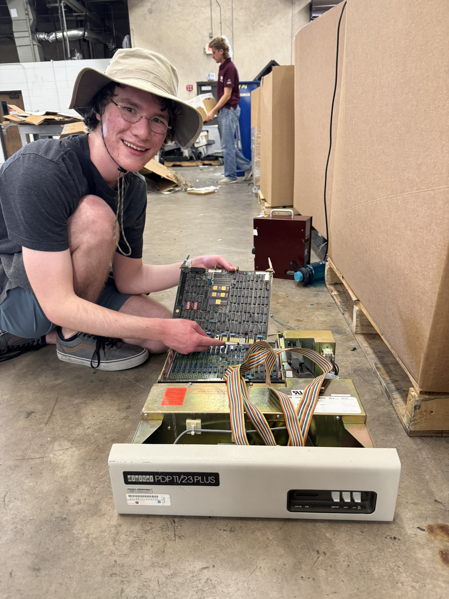
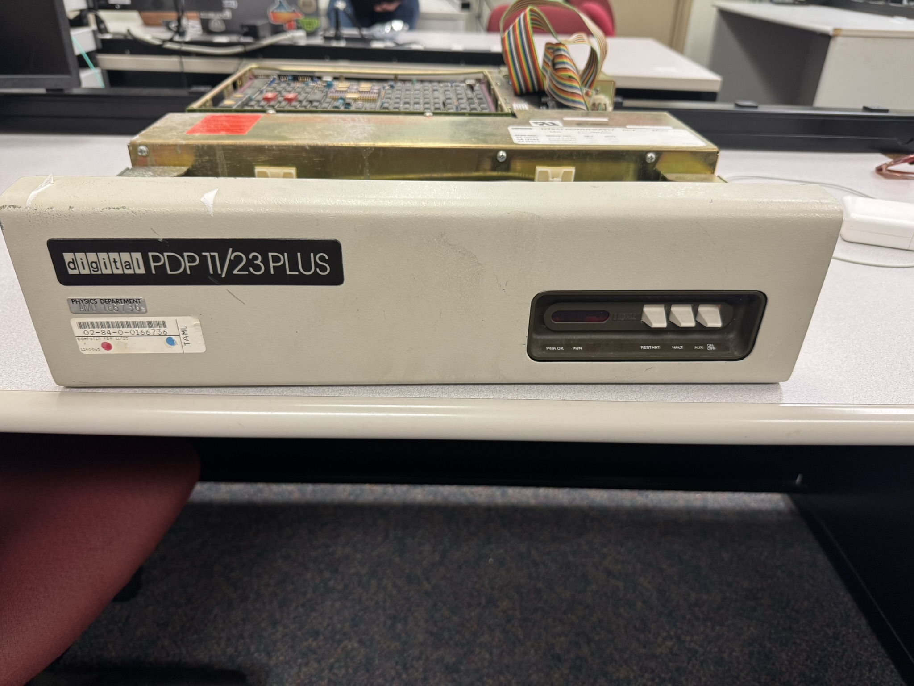
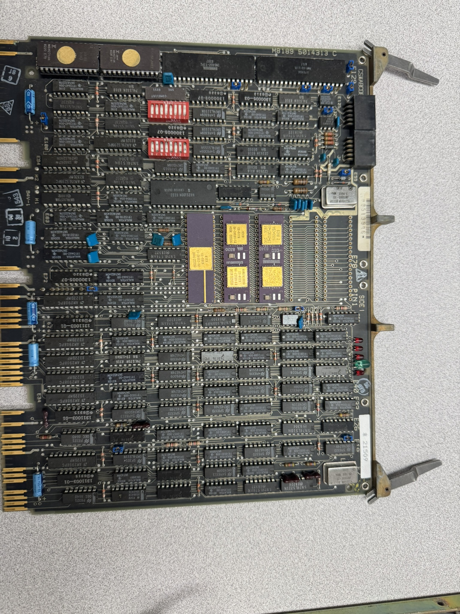
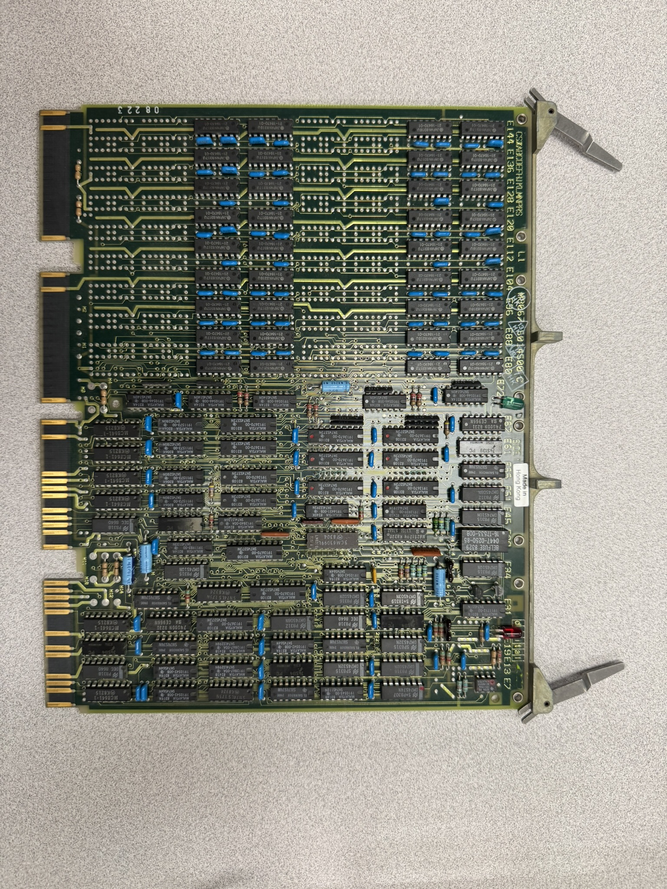
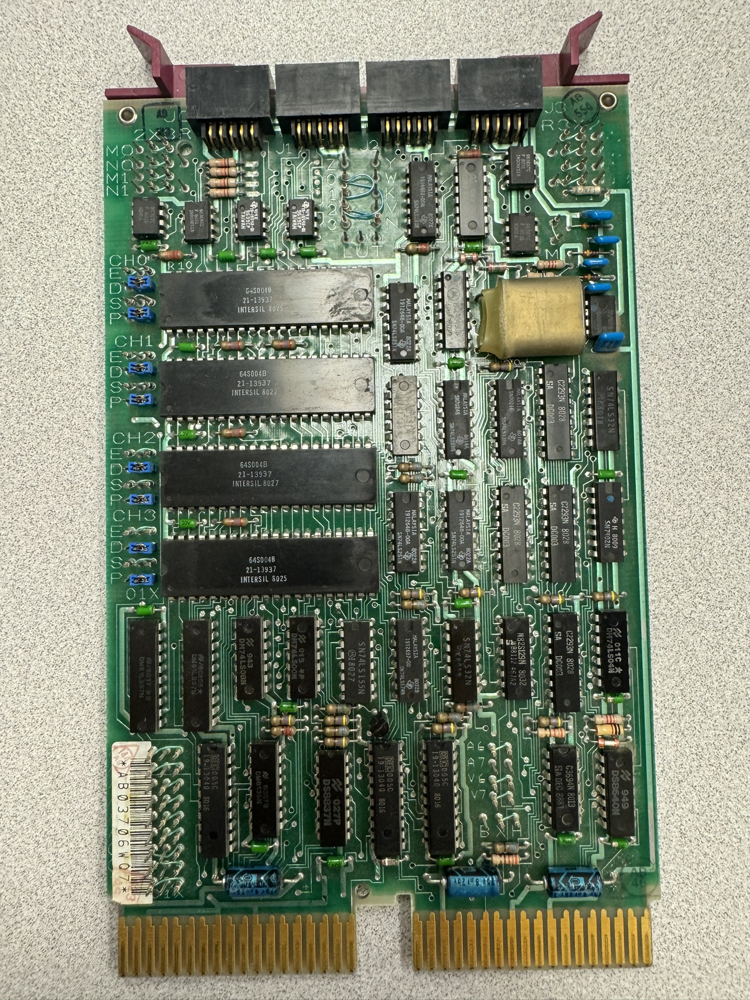
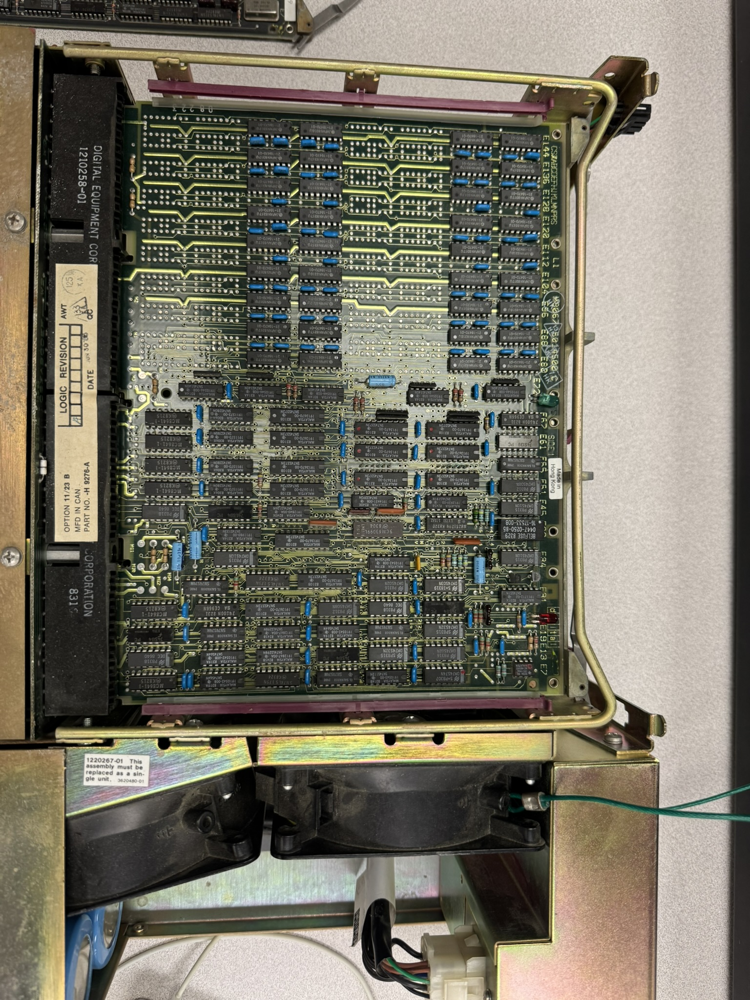

on and last updated on
Rescuing a historic PDP-11 computer from being salvaged
Over the summer my friend Calvin and I went to A&M Surplus, the place where old A&M equipment is sent to be reused, auctioned, or salvaged for scraps, to see if there was anything interesting. It was our first time going and we had no idea what to expect. We found a variety of old office equipment, projectors, oscilloscopes, and other random equipment resting on shelves waiting to be reused by other departments. There were also a few very large cardboard boxes containing keyboards, office phones, old door card readers, and … a 1970s era looking minicomputer. Flabbergasted, we carefully dug out the minicomputer to find it in surprisingly good condition!

Calvin excitedly holding the PDP-11/23 Plus CPU boardUpon further inspection (really just looking at the front panel) we discovered it was a DEC PDP-11/23 Plus minicomputer from the early 1980s!
Ok what’s so special about a big old computer from the 80s? Well, I happen to enjoy computers of this era and Calvin really likes anything to do with mainframes, minicomputers, and computing history. He’s been dreaming about owning and playing with a PDP-11 for quite some time now. But that’s why we care. Why should you care?
The PDP-11 series of minicomputers is arguably one of the most pivotal and influential minicomputer series in history. Released in 1970, it would go on to sell over 600,000 units by 1992 and was the computer on which the venerable Unix OS was written. Unix spawned C, C spawned Linux, and the rest is history.
We weren’t allowed to take the PDP-11 with us until it was transferred from surplus to our department. Not knowing who the transfer request would go to or if it would be allowed by all parties involved I submitted the request and waited. After a week with no response we started losing hope. After a month I had written it off as denied. (Calvin was still mildly hopeful.)
In a recent conversation with our department’s IT team I brought up the PDP-11 find and was met with excitement at finding such a machine at surplus! The conversation also yielded the name of the person who approves transfer requests. Excitedly I reached out and was informed that he hadn’t seen any such request. Disappointed and confused I reached out to surplus and was told that the request was approved three days after it was submitted, but that equipment not picked up in ten days is usually sent to be salvaged for scrap metal. At this point I am pensive - there’s a small chance the machine is still there but a larger chance that it’s been crudely salvaged for its “precious” metals and raw materials.
The next day I took the bus to surplus and ask if the computer is still there. The employees there had no idea what I’m talking about so they just took me to the holding area and asked if I see it. A few minutes later I was lugging a very heavy computer across the street to the bus stop. Two transfers and several stops later the PDP-11 was placed in our lab!
This specific model, the PDP-11/23 Plus came out in 1981 - our unit appears to be from 1984 and belonged to the Physics department. We have no idea how long it was in service, what it was used for, or where the rest of the parts are.

Front of PDP-11/23 Plus
PDP-11 CPU Board
PDP-11 RAM Board
PDP-11 Serial Interface Board
PDP-11 ChassisNext Steps
Calvin and I are going to ensure the power supply isn’t faulty, replace any bulging capacitors or other failed components, make our own serial cable, and try booting to the on-line debugging ROM. After that we will work on getting an emulated disk / tape drive connected to the machine. If you or anyone you know have a disk / tape drive please contact me.
As we make progress I’ll write up more posts under the PDP-11 tag.